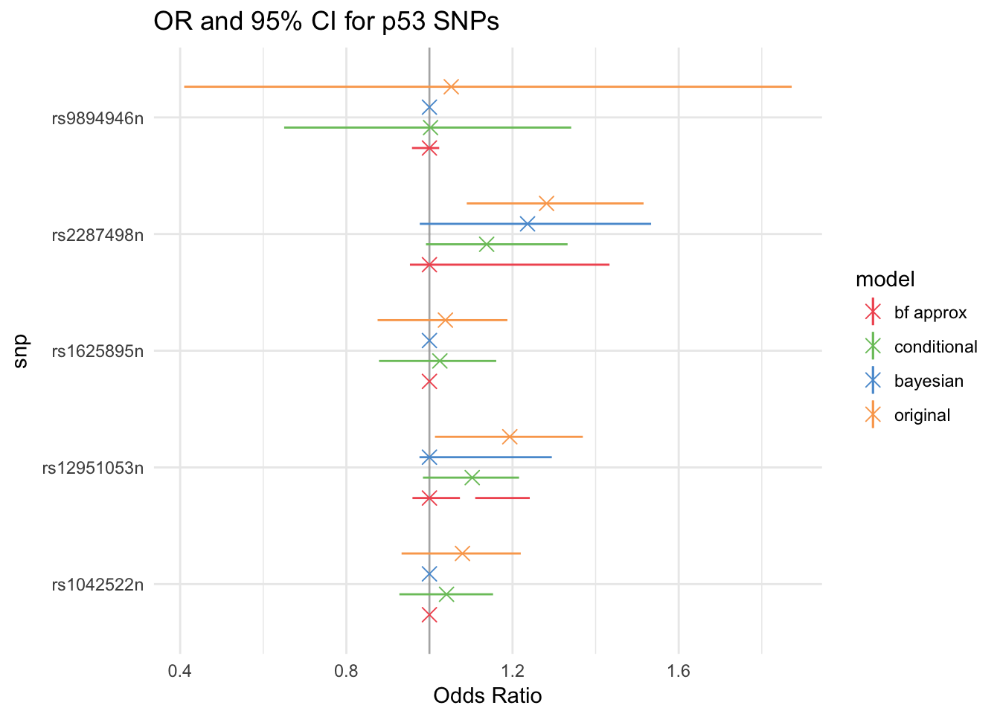

Chapter 7 Analysis of TP53 Data
Each model adjusts for study site, reference age, and personal history of breast cancer. History of breast cancer is treated as a fixed effect, and the rest of the covariates’s coefficients are treated as normally distributed random effects.
\(P(Y_{ij}=1) = logit^{-1}(\beta^{site}_{ j}+ \beta^{p53}_{j}*p53_{ij}+ \beta^{age}_{j}*age_{ij}+\beta^{BC}* BC_{ij})\)\ \(\beta^{site}_{ j}\sim N(\mu^{site}, \sigma^{2site})\)\ \(\beta^{age}_{j}\sim N(\mu^{age}, \sigma^{2age})\)\ \(\beta^{BC}, \mu^{age},\mu^{site}\sim N(0,0.1)\)\ \(\sigma^{age},\sigma^{site} \sim invGamma(1, 0.05)\)\
The p53 variable’s site-specific log OR priors were defined using the models described previously.
Warning: Removed 17 rows containing missing values (geom_linerange).
The new models shrunk estimates towards 0 for all SNPs. The BF approximation model set all point estimates to zero, as did the fully Bayesian model with the exception of one. This is the same SNP (rs2287498n) that was detected as significant in the MISA analysis. However, the credible interval contains 0, so there is not enough evidence for association. Similarly, although the conditional likelihood model does not set any estimates to zero, all its credible intervals contain zero.
The original model has the longest credible intervals for all SNPs except rs2287498n, for which both the Bayesian and Bayes Factor models have large credible intervals, indicating more uncertainty than the original model.
Below are the full tables of OR by site and SNP.
| original estimate | original CI | bayesian estimate | bayesian CI | CL estimate | CL CI | BF estimate | BF CI | |
|---|---|---|---|---|---|---|---|---|
| AUS | 0.961 | 0.724 - 1.22 | 1 | 1 - 1 | 0.98 | 0.757 - 1.203 | 1 | 0.95 - 1.001 |
| HAW | 0.924 | 0.422 - 1.503 | 1 | 1 - 1 | 0.979 | 0.529 - 1.319 | 1 | 0.946 - 1.051 |
| MAY | 0.948 | 0.691 - 1.219 | 1 | 1 - 1 | 0.977 | 0.729 - 1.19 | 1 | 0.964 - 1.031 |
| POL | 1.475 | 0.909 - 2.148 | 1 | 1 - 1 | 1.068 | 0.91 - 1.475 | NA | - |
| Overall | 1.053 | 0.41 - 1.872 | 1 | 1 - 1 | 1.003 | 0.65 - 1 , 1 - 1.341 | 1 | 0.958 - 1.024 |
| original estimate | original CI | bayesian estimate | bayesian CI | CL estimate | CL CI | BF estimate | BF CI | |
|---|---|---|---|---|---|---|---|---|
| AUS | 1.256 | 1.022 - 1.522 | 1 | 0.965 - 1.425 | 1.151 | 0.979 - 1.407 | 1 | 0.961 - 1.296 |
| HAW | 1.195 | 0.814 - 1 , 1.001 - 1.542 | 1 | 0.892 - 1.428 | 1.096 | 0.842 - 1.36 | 1 | 0.933 - 1.258 |
| MAL | 1.189 | 0.898 - 1 , 1.001 - 1.445 | 1 | 0.928 - 1.366 | 1.113 | 0.93 - 1 , 1.001 - 1.348 | 1 | 0.947 - 1.248 |
| MAY | 1.22 | 0.94 - 0.998 , 1.001 - 1.541 | 1 | 0.931 - 1.404 | 1.118 | 0.934 - 1.36 | NA | - |
| NCO | 1.275 | 1.026 - 1.654 | 1 | 0.956 - 1.515 | 1.066 | 0.78 - 1 , 1 - 1.291 | NA | - |
| NEC | 1.209 | 0.974 - 1.473 | 1 | 0.934 - 1.356 | 1.073 | 0.855 - 1.248 | 1 | 0.941 - 1.263 |
| NHS | 1.131 | 0.629 - 1 , 1 - 1.435 | 1 | 0.781 - 1.35 | 1.104 | 0.909 - 1.37 | 1 | 0.925 - 1.249 |
| POL | 1.187 | 0.891 - 0.999 , 1 - 1.464 | 1 | 0.915 - 1.363 | 1.102 | 0.896 - 1.348 | NA | - |
| SEA | 1.121 | 0.827 - 1.345 | 1 | 0.904 - 1.274 | 1.117 | 0.913 - 1 , 1 - 1.406 | 1 | 0.939 - 1.218 |
| STA | 1.191 | 0.876 - 0.999 , 1 - 1.481 | 1 | 0.926 - 1.374 | 1.121 | 0.923 - 1.357 | 1 | 0.943 - 1.255 |
| UCI | 1.184 | 0.866 - 1 , 1 - 1.446 | 1 | 0.909 - 1.376 | 1.079 | 0.932 - 1 , 1 - 1.25 | 1 | 0.935 - 1.254 |
| UKO | 1.217 | 0.909 - 1.567 | 1 | 0.922 - 1.432 | 1.099 | 0.956 - 1.286 | 1 | 0.942 - 1.268 |
| USC | 1.221 | 0.937 - 1 , 1.001 - 1.51 | 1 | 0.94 - 1.369 | 1.065 | 0.926 - 1 , 1 - 1.23 | 1 | 0.973 - 1.274 |
| Overall | 1.193 | 1.013 - 1.369 | 1 | 0.976 - 1.295 | 1.103 | 0.984 - 1.216 | 1 | 0.959 - 1.073 , 1.11 - 1.242 |
| original estimate | original CI | bayesian estimate | bayesian CI | CL estimate | CL CI | BF estimate | BF CI | |
|---|---|---|---|---|---|---|---|---|
| AUS | 1.015 | 0.819 - 1 , 1 - 1.193 | 1 | 1 - 1 | 1.004 | 0.805 - 1 , 1 - 1.166 | 1 | 1 - 1 |
| HAW | 1.023 | 0.748 - 1.283 | 1 | 1 - 1 | 1.013 | 0.729 - 0.999 , 1 - 1.266 | 1 | 1 - 1 |
| MAL | 1.051 | 0.848 - 1.273 | 1 | 1 - 1 | 1.041 | 0.851 - 1.253 | 1 | 1 - 1 |
| MAY | 1.049 | 0.847 - 1.267 | 1 | 1 - 1 | 1.038 | 0.841 - 1.255 | 1 | 1 - 1 |
| NCO | 0.997 | 0.803 - 1 , 1 - 1.181 | 1 | 1 - 1 | 0.998 | 0.797 - 1.152 | 1 | 1 - 1 |
| POL | 1.08 | 0.887 - 1.463 | 1 | 1 - 1 | 1.039 | 0.862 - 1.251 | NA | - |
| SEA | 1.049 | 0.855 - 1 , 1 - 1.247 | 1 | 1 - 1 | 1.021 | 0.79 - 1.228 | 1 | 1 - 1 |
| STA | 1.032 | 0.82 - 1.279 | 1 | 1 - 1 | 1.047 | 0.9 - 1 , 1 - 1.23 | 1 | 1 - 1 |
| Overall | 1.039 | 0.875 - 1 , 1 - 1.188 | 1 | 1 - 1 | 1.025 | 0.879 - 1.161 | 1 | 1 - 1 |
| original estimate | original CI | bayesian estimate | bayesian CI | CL estimate | CL CI | BF estimate | BF CI | |
|---|---|---|---|---|---|---|---|---|
| AUS | 1.043 | 0.824 - 1.205 | 1 | 1 - 1 | 1.028 | 0.837 - 1.154 | 1 | 1 - 1 |
| HAW | 1.059 | 0.751 - 1 , 1 - 1.286 | 1 | 1 - 1 | 1.035 | 0.82 - 1 , 1 - 1.234 | 1 | 1 - 1 |
| MAL | 1.096 | 0.94 - 1.277 | 1 | 1 - 1 | 1.051 | 0.918 - 1.204 | 1 | 1 - 1 |
| MAY | 1.109 | 0.939 - 1 , 1.001 - 1.322 | 1 | 1 - 1 | 1.059 | 0.934 - 1.256 | 1 | 1 - 1 |
| NCO | 1.068 | 0.88 - 1.244 | 1 | 1 - 1 | 1.039 | 0.897 - 1.198 | 1 | 1 - 1 |
| POL | 1.133 | 0.936 - 1 , 1 - 1.418 | 1 | 1 - 1 | 1.038 | 0.895 - 1 , 1 - 1.204 | NA | - |
| SEA | 1.065 | 0.879 - 1.232 | 1 | 1 - 1 | 1.038 | 0.879 - 1.204 | 1 | 1 - 1 |
| STA | 1.072 | 0.867 - 1 , 1 - 1.275 | 1 | 1 - 1 | 1.043 | 0.934 - 1.18 | 1 | 1 - 1 |
| Overall | 1.08 | 0.933 - 1.22 | 1 | 1 - 1 | 1.041 | 0.928 - 1.153 | 1 | 1 - 1 |
| original estimate | original CI | bayesian estimate | bayesian CI | CL estimate | CL CI | BF estimate | BF CI | |
|---|---|---|---|---|---|---|---|---|
| HAW | 1.267 | 0.907 - 1.711 | 1.193 | 0.929 - 1.621 | 1.119 | 0.886 - 1.495 | 1 | 0.845 - 1.567 |
| MAL | 1.251 | 1.004 - 1.525 | 1.188 | 0.945 - 1.5 | 1.139 | 0.928 - 1.406 | 1 | 0.937 - 1.435 |
| MAY | 1.335 | 1.047 - 1.803 | 1.261 | 0.963 - 1.674 | 1.115 | 0.904 - 1.383 | NA | - |
| NCO | 1.334 | 1.105 - 1.702 | 1.282 | 0.994 - 1.045 , 1.071 - 1.635 | 1.135 | 0.91 - 1.491 | NA | - |
| POL | 1.259 | 0.95 - 1.595 | 1.189 | 0.941 - 1.556 | 1.128 | 0.907 - 1.444 | NA | - |
| SEA | 1.218 | 0.929 - 1.473 | 1.137 | 0.913 - 1.49 | 1.225 | 0.974 - 1.666 | 1 | 0.926 - 1.398 |
| STA | 1.265 | 0.972 - 1.653 | 1.199 | 0.943 - 1.556 | 1.115 | 0.938 - 1 , 1 - 1.386 | 1 | 0.915 - 1.496 |
| UKO | 1.257 | 0.931 - 0.999 , 1.002 - 1.6 | 1.18 | 0.928 - 1.555 | 1.116 | 0.966 - 1.377 | 1 | 0.905 - 1.476 |
| USC | 1.366 | 1.087 - 1.804 | 1.306 | 0.997 - 1.046 , 1.095 - 1.73 | 1.087 | 0.909 - 1 , 1 - 1.309 | 1 | 0.95 - 1.689 |
| Overall | 1.282 | 1.09 - 1.515 | 1.236 | 0.977 - 1.534 | 1.138 | 0.992 - 1.333 | 1 | 0.953 - 1.433 |